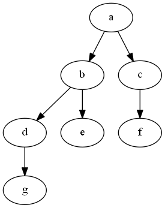

In a previous post, I wrote about how we make sense of the world by modelling relationships between things as tree-like hierarchies. This time we will add to this hierarchical data structure, a representation derived by calculating all possible paths. This set of paths is referred to as a transitive closure, and can be thought of as the set of all paths if you start at each node in the tree.
I wish I could tell you that it is as simple as Mr. Eby in this article makes it out to be, but alas, when I got right down implementing a full solution, things got quite involved. It tends to be like that. None the less, credit where credit is due; go read that article first I can highly recommend it, and then come back here for more!
I’ve developed the code for SQL Server, so it is immediately T-SQL compatible, but you can surely alter it for any decent database.
Background
Trees and hierarchies in general can get quite complicated, so why would we choose to add to this complexity yet another data structure? The reason is so that we can apply memoization; we buy time with space. At the cost of the time to compute the transitive closure once, and the cost of the space required to persist it, we gain the time it would have taken to calculate it each time it is needed.
Previously I wrote about how one can go about to materialize an entire complex and expensive view. The use of the transitive closure can also be thought of as a kind of materialization, but it is far smarter and promises to be more useful.
The [transitive] part in the name refers to a property that a relation can exhibit. Since you are related to your father, and your child is related to you, your child is also related to your father. We can say that the inheritance relation is transitive. Since 9 > 5, and 5 > 3, it is also true that 9 > 5 > 3 and 9 > 3; the “greater than” relation is transitive.
Representing the hierarchy
The hierarchy we will work with is a simple one:
The usual way to represent such a hierarchy in a table is through self referencing records:
| id | parent_id | label |
|---|---|---|
| 1 | 0 | ‘a’ |
| 2 | 1 | ‘b’ |
| 3 | 1 | ‘c’ |
| 4 | 2 | ’d’ |
| 5 | 2 | ‘e’ |
| 6 | 3 | ‘f’ |
| 7 | 4 | ‘g’ |
Such self referencing records in a single table makes manipulation of the hierarchy very simple. For example, to move the sub tree rooted in node 2 and make it fall under node 6, we simply update the parent_id of node 2 to reference node 6. This simplicity, however, comes at a cost. When you want to traverse the hierarchy, you require iteration or recursion which is generally expensive. This is especially so if all that you are after is only a portion of the tree, or worse, only the path from the root to a particular intermediate or leaf node.
Suppose you want to find out the path from node ‘g’ to the root. After finding the entry for node ‘g’, you have to repeatedly find the parent until there is no more parent. Suppose you want to get the path from the root for each node in the tree. The database has to do this process for every node.
A transitive closure over all the relations in the base table gives you a ready-made set of paths which you can index and query, just like any other set of records. No more need for recursive CTE’s each time you want path information, or worse still, multiple queries!
Setup
-- create table node to represent the relations create table node (id int, parent_id int, label varchar(50)); -- load noad insert into node values (1,0,'a'), (2,1,'b'), (3,1,'c'), (4,2,'d'), (5,2,'e'), (6,3,'f'), (7,4,'g'); -- table to hold the transitive closure over nodes create table closure (parent_id int, child_id int, depth int, route varchar(100));Table node is the standard self referencing structure, and table closure will contain the paths that node represent. Column node.label is only the label that applies to the particular node row, but column closure.route will contain a nice chain of all the labels from closure.parent_id to closure.child_id. In a database that supports arrays, such as PostgreSQL, we can even go so far as to store the actual id values of the whole path. In column closure.depth we want to store how many hops it takes to go from the node at parent_id to the node at child_id.
What we want to achieve is to calculate all possible paths in the tree and represent them like this:
| parent_id | child_id | depth | route |
|---|---|---|---|
| 1 | 1 | 0 | a |
| 2 | 2 | 0 | b |
| 1 | 2 | 1 | a > b |
| 3 | 3 | 0 | c |
| 1 | 3 | 1 | a > c |
| 6 | 6 | 0 | f |
| 3 | 6 | 1 | c > f |
| 1 | 6 | 2 | a > c > f |
| 4 | 4 | 0 | d |
| 2 | 4 | 1 | b > d |
| 1 | 4 | 2 | a > b > d |
| 5 | 5 | 0 | e |
| 2 | 5 | 1 | b > e |
| 1 | 5 | 2 | a > b > e |
| 7 | 7 | 0 | g |
| 4 | 7 | 1 | d > g |
| 2 | 7 | 2 | b > d > g |
| 1 | 7 | 3 | a > b > d > g |
Notice the identity paths, or paths starting and ending in the same node, with depth of zero. Later on it will become apparent why we require these.
Closure insert
A new entry in table node can only be one of the following:
- a new, additional root - there exists no parent for it
- a new, additional child - there exists a parent for it
For either type of new node, table closure requires a new identity path. Furthermore, if the new node has a parent, we also need to add entries for all paths ending in the new node.
create proc closure_insert @parent_id int, @child_id int, @route varchar(50) as begin -- always insert identity insert into closure (parent_id,child_id,depth,route) values (@child_id,@child_id,0, @route); if @parent_id <> @child_id and @parent_id is not null insert into closure (parent_id,child_id,depth, route) select parent.parent_id, child.child_id, parent.depth + child.depth + 1, parent.route + ' > ' + child.route from closure as parent cross join closure as child where parent.child_id = @parent_id and child.parent_id = @child_id; end;Closure delete
Deleting a relation (suppose it is the node with id @child_id)from the node table requires us to delete all paths from the closure table that:
- start out from @child_id,
- end in @child_id,
- runs through @child_id, so any path that starts at any of @child_id’s parents,and any path that ends in any of @child_id’s children
Closure update
Similar to the delete operation, if a node changes, all paths that start from, or end in, or go through that node needs to be updated since the label of the node might have changed and thus the routes need to be built again. If a node moved; if it is now a sub node of another node then all paths starting from, ending in and going through the node that moved needs to be deleted, and new paths added.
To simplify matters we are going to delete all such starting from, ending in, and going through paths, and re-insert the individual nodes again in the correct order. Before we delete all the paths we first will temporarily store all the nodes we will be re-inserting afresh after the delete. Then we will do the delete, followed by successively calling the insert proc to insert everything again.
But what if we insert a node (think add all paths involving this node) before we inserted the node’s parent(s)? If you take a look at our insert proc you’ll see very quickly that this will result in problems; we will not find the parent paths, and thus add too few actual paths. For this reason it is essential that we first insert all nodes without parents, then followed by the rest of the set that do have a parent, which will already be inserted. The insert proc will take care of adding all required paths, but only if we insert in the correct order.
create proc closure_update @child_id int as begin -- temp storage of nodes to insert after the deletion declare @t as table (id int primary key, parent_id int, label varchar(50)); insert into @t (id,parent_id,label) select link.child_id,n.parent_id,n.label from closure as link join node as n on n.id = link.child_id where link.parent_id = @child_id; delete from link from closure as link join @t as t on link.child_id = t.id or link.child_id = @child_id; -- repeatedly call the insert proc in the correct order, -- which is ensured by the recursive CTE over the set of nodes to insert declare @_p int, @_c int, @_l varchar(50); declare cur cursor fast_forward for with to_insert as ( select parent_id, id, label from @t ), to_insert_ordered as ( -- the anchor for the recursion select ti.parent_id, ti.id, ti.label from to_insert as ti where ti.parent_id = 0 or ti.id = @child_id or ti.parent_id not in ( select id from to_insert ) union all select ti.parent_id, ti.id, ti.label from to_insert_ordered as tio join to_insert as ti on ti.parent_id = tio.id ) select parent_id, id, label from to_insert_ordered; open cur; fetch next from cur into @_p, @_c, @_l; while @@FETCH_STATUS = 0 begin exec closure_insert @_p,@_c,@_l; fetch next from cur into @_p, @_c, @_l; end close cur deallocate cur; end;The insertion cursor query follows the usual pattern for a recursive CTE:
- establish the data to recurse over: to_insert
- establish the anchor, or starting point: to_insert_ordered
- union with a join onto itself and the whole list to_insert
- select the result
Closure refresh
To do the initial load, and in case something goes wrong, we add one more proc; a full refresh proc, which is simply successive calls to the insert proc, but in the correct order as described in the previous section.
create proc closure_refresh as begin truncate table closure; declare @p int, @c int, @l varchar(50); declare cur cursor fast_forward for with to_insert as ( select parent_id, id, label from node ), to_insert_ordered as ( select ti.parent_id, ti.id, ti.label from to_insert as ti where ti.parent_id = 0 or ti.parent_id not in ( select id from to_insert ) union all select ti.parent_id, ti.id, ti.label from to_insert_ordered as tio join to_insert as ti on ti.parent_id = tio.id ) select parent_id, id, label from to_insert_ordered; open cur; fetch next from cur into @p, @c, @l; while @@FETCH_STATUS = 0 begin exec closure_insert @p,@c,@l; fetch next from cur into @p, @c, @l; end close cur deallocate cur; end;Testing
Here are some sample queries which you can use to test your solution. I’ve done it, not going to paste 50 tables of output here, try all sorts and see what happens:
-- start clean exec closure_refresh; -- check that everything is in order select * from closure; -- relabel node 2 update node set label = 'z' where id = 2; -- do what the after update trigger will do: exec closure_update 2; -- not only node 2's identity entry, -- but all paths involving it should now say 'z' instead of 'b' select * from closure; -- fix node 2 again: update node set label = 'b' where id = 2; exec closure_update 2; -- things should be back to what it was initially... select * from closure; -- move node 2, or 'b' under node 6 update node set parent_id = 6 where id = 2; exec closure_update 2; -- node 2 should now be under node 6 select * from closure;Go forth and conquer!
Armed with the procedures we developed thus far, we can proceed to hook them up with after triggers on the node table. When the node table change, the after triggers fire and the closure table stays up to date.
When we want to answer questions such as, does there exist a path from X to Y, what is the longest path from X to Y (for obtaining the full path from the root), and many more such queries, we can simply perform fast selects against the closure table. We can index parent_id, child_id, and (parent_id,child_id) and so on in order to speed things up. We can create a few custom views for quickly determining all the paths from the roots to the individual intermediate and leaf nodes.
The recursive CTE that is needed for the update procedure is unfortunate, but luckily it only operates on the set of nodes that need to change. Unless you are altering root nodes all the time, this will generally be limited to a small number, and not the entire set of data as is the case in a full materialization of the whole tree. This means that the maintenance overhead will generally be far less.
This is only a proof of concept, but you can go forth from here and use it as a reference to implement more complex and advanced transitive closures. I hope it helps you maintain performance on queries on hierarchies, and I hope you’ve learned something new along the way.